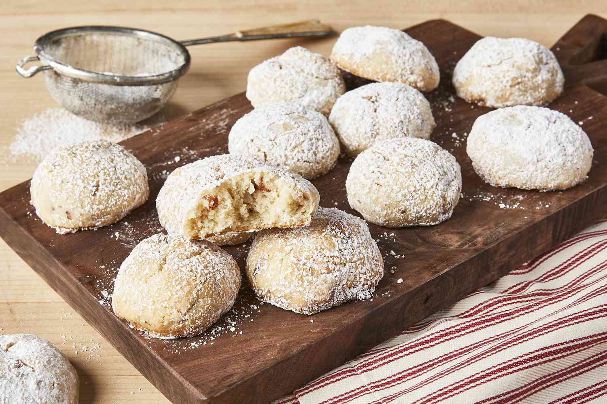

>Mexican Wedding Cookies!

Befitting for a white boy adopted into a Mexican family
Sugary and nutty goodness
- 1/2 cup white sugar
- 2 teaspoons vanilla extract
- 2 teaspoons water
- 2 cups all-purpose flour
- 1 cup finely chopped almonds
- 1/4 tsp salt
- 1/2 cup powdered sugar
Directions
- Beat butter and sugar in a medium bowl with an electric mixer until light and fluffy. Mix in vanilla and water. Add flour, almonds, and salt; beat on low speed until dough is just combined. Cover and chill for 1 to 3 hours.
- Preheat the oven to 325 degrees F
- Shape chilled dough into 1-inch balls and place 2 inches apart onto unlined cookie sheets.
- Bake in the preheated oven for 15 to 20 minutes. Remove cookies from the sheets and transfer to wire racks to cool, 20 to 30 minutes.
- Place powdered sugar in a shallow bowl. Roll cooled cookies in powdered sugar to coat. Transfer to an airtight container and store at room temperature.
Return to top
Return to homepage